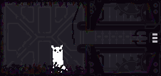

"This is a College Project"
About Rain World:
Rain World is a 2D, exploration-focused survival platformer set in a long-abandoned world, where creatures both fascinating and fearsome inhabit. Bone-crushing intense rain pounds the surface regularly, making life as we know it almost impossible. The creatures in this world hibernate much of the time, but must spend the dry periods between rain finding food to last another day.
Rain
The Rain is a timed environmental hazard deadly to the player and all other Creatures. It appears at the end of every cycle once the in-game timer has run out. It is preceded first by a darkening of the screen and then by rumbling and screen-shake. These effects increase in intensity as the first drops of rain appear. The rain quickly increases in intensity until it is lethal, either crushing or drowning all creatures in affected rooms.
To avoid this hazard, the player must seek Shelter.
Hibernation
Hibernation forms part of the core gameplay loop of Rain World, serving as the goal of each cycle. Shelters are self-sealing chambers scattered around all the Reigions. Resting in them is the only way to finish a cycle, save the game and progress karma level.
Hibernation is initiated by entering a Shelter room with sufficient food to sleep through the rain.